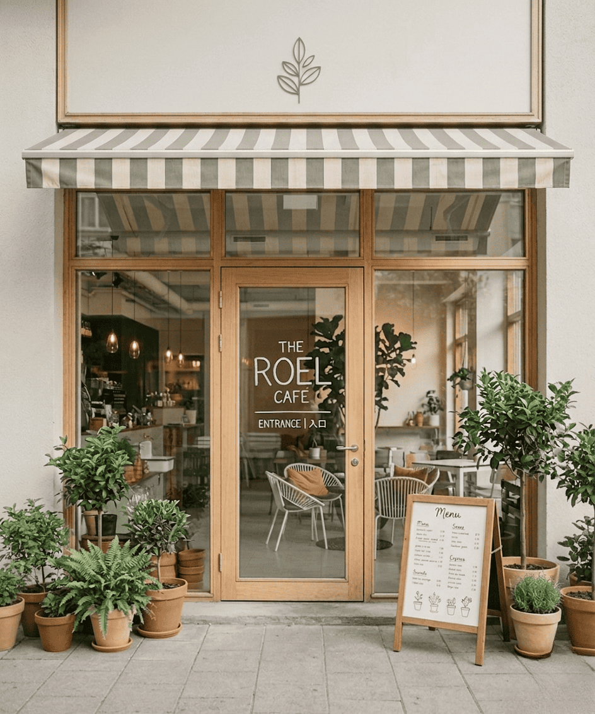
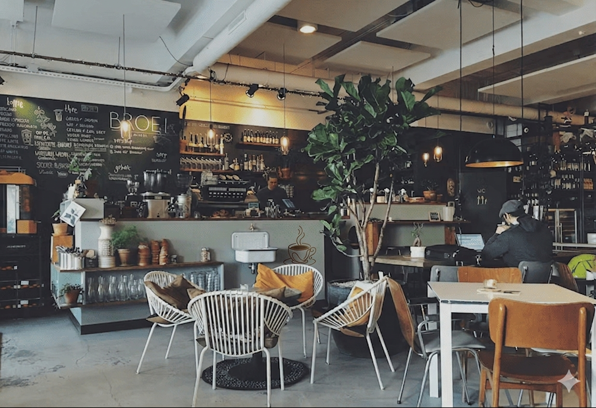
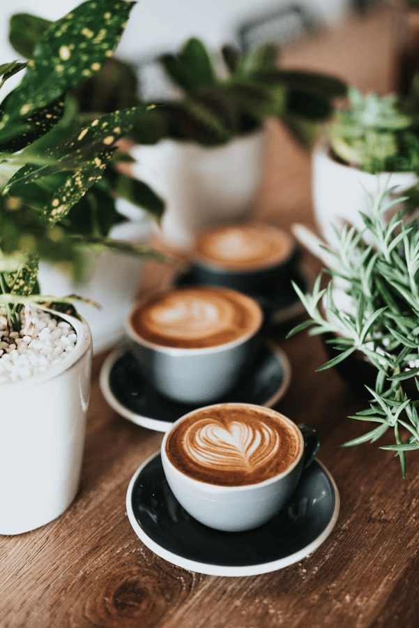

在都市的喧囂中，我們為閱讀者保留一方淨土。每一行文字都經過精心挑選，每一杯咖啡都體現職人精神。我們相信，真正的閱讀是需要留白的。



關於如何在資訊爆炸的時代，找回專注力的閱讀指南...
淺焙與深焙的選擇，不僅是風味，更是對於時間的理解...
提供小型讀書會、私人講座或專注工作的角落。請填寫下方表單，我們將於 24 小時內與您聯繫確認。
是的，我們致力於維護閱讀體驗。店內全面禁菸且請降低交談音量，讓每位讀者都能享受專注的時光。
我們提供全店高速 Wi-Fi，特定區域設有電源插座，歡迎攜帶筆電進行低音量工作或閱讀。